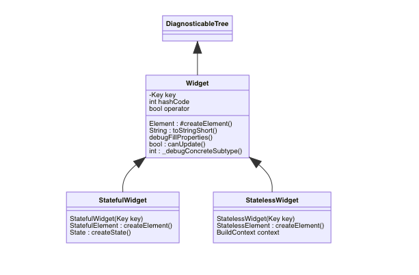

Flutter中的Widget
Widget
StatefulWidge与StatelessWidget继承自WidgetWidget是一个配置文件，Element才是真正被使用、修改的对象
Element
StatefulWidge与StatelessWidget的craeteElement都分别生成对应的实例StatefulElement、StatelessElement，而Element最终还实现了BuildContext，源码中BuildContext对于自身的描述为:实际是Element对象，该接口用于阻止直接操作Element对象对于
StatefulElement与StatelessElement,很重要的一点在于双方都拥有的函数build,但是区别在于：1
2
3
4
5//StatefulElement 使用 State
Widget build() => state.build(this);
//StatelessElement 使用 StatelessWidget
Widget build() => widget.build(this);
Widget的diff机制（同级之间才会进行对比），
Key用以做唯一标识，方便在结点树中找到对应的状态做配置Widget
1
2
3
4
5
6
7
8
9
10
11
12
13
14
15
16
17
18
19
20
21
22
abstract class Widget extends DiagnosticableTree {
/// Initializes [key] for subclasses.
const Widget({ this.key });
...
/// Whether the `newWidget` can be used to update an [Element] that currently
/// has the `oldWidget` as its configuration.
///
/// An element that uses a given widget as its configuration can be updated to
/// use another widget as its configuration if, and only if, the two widgets
/// have [runtimeType] and [key] properties that are [operator==].
///
/// If the widgets have no key (their key is null), then they are considered a
/// match if they have the same type, even if their children are completely
/// different.
/// 该函数返回 true则说明不需要替换Element，直接更新Widget即可
static bool canUpdate(Widget oldWidget, Widget newWidget) {
return oldWidget.runtimeType == newWidget.runtimeType
&& oldWidget.key == newWidget.key;
}
...
}
- 本文链接：https://www.wl960127.top/posts/69f1c3a4/
- 版权声明：本站内容均为个人学习笔记,不涉及商业用途，仅提供学习参考,第三方摘录已署名链接,未署名请评论添加,转载署名来源即可。
分享